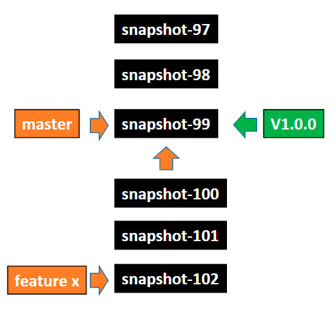
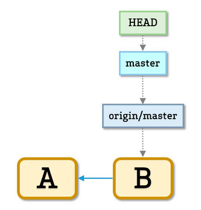
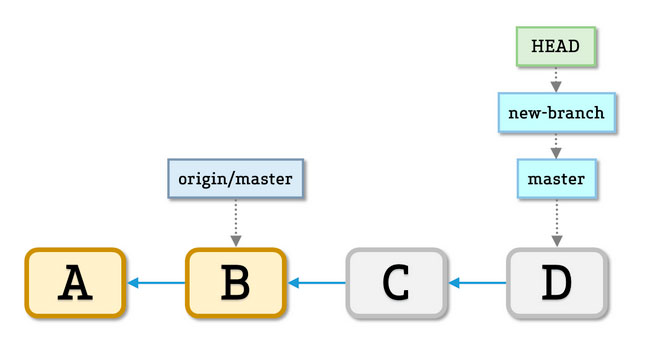
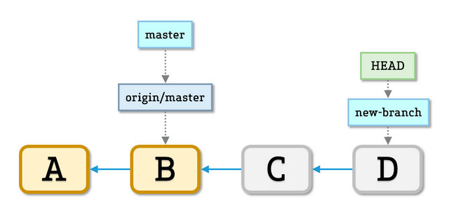

Git, commit
and
code
review
Часть первая:
Git
"Simple but powerful"
Сообщения Git’а могут испугать:
“You are in detached HEAD state…”
Внезапно...

А теперь будет притча o git
По мотивам: http://tom.preston-werner.com/2009/05/19/the-git-parable.html
Представьте мир без систем контроля версий...
Как выглядел бы день обычного разработчика?
Будем хранить код проекта, например, тут:
С:\\dev\workingНо без бэкапа совсем плохо,
поэтому после завершения каждой фичи будем делать копию папки:
С:\\dev\workingВот таким образом:
С:\\dev\archive\snapshot-0И еще:
С:\\dev\archive\snapshot-1С:\\dev\archive\snapshot-2С:\\dev\archive\snapshot-3А теперь пришло время изобрести commit message
В каждый snapshot архив будем добавлять message.txt вида:
Я, Иванов Иван Иванович, прикрутил новую версию tauСharts.
20 августа 2042
Теперь структура папок выглядит так
С:\\dev\workingС:\\dev\archive\snapshot-0\message.txtС:\\dev\archive\snapshot-1\message.txtС:\\dev\archive\snapshot-2\message.txt...Прошла пара недель…
Первый релиз:
...С:\\dev\archive\snapshot-97С:\\dev\archive\snapshot-98С:\\dev\archive\snapshot-99 (aka release-1.0)...Но мы кодим дальше:
...С:\\dev\archive\snapshot-97С:\\dev\archive\snapshot-98С:\\dev\archive\snapshot-99 (aka release-1.0)С:\\dev\archive\snapshot-100С:\\dev\archive\snapshot-101С:\\dev\archive\snapshot-102... Плохие новости:
"Критикал баг в продакшене" :(
Исправили!
Но куда сохранить fix?
...С:\\dev\archive\snapshot-99 (aka release-1.0)С:\\dev\archive\snapshot-100С:\\dev\archive\snapshot-101С:\\dev\archive\snapshot-102...Линейная организация не подходит :(
Есть идея!
Направленный ациклический граф
Kак преобразовать список в дерево?
С:\\dev\archive\snapshot-97С:\\dev\archive\snapshot-98С:\\dev\archive\snapshot-99 (aka release-1.0.0)С:\\dev\archive\snapshot-100С:\\dev\archive\snapshot-101С:\\dev\archive\snapshot-102С:\\dev\archive\snapshot-103 (aka release-1.0.1)С:\\dev\archive\snapshot-104С:\\dev\archive\snapshot-105С:\\dev\archive\snapshot-106 (aka release-1.0.2)С:\\dev\archive\snapshot-107Добавим к каждому сообщению ссылку на родителя
Я, Иванов Иван Иванович, прикрутил новую версию tauСharts.
20 августа 2042
Предыдущий коммит - С:\\dev\archive\snapshot-99
Получилось такая логическая структура

Но как определить последний коммит в ветке по номеру?
С:\\dev\archive\snapshot-97С:\\dev\archive\snapshot-98С:\\dev\archive\snapshot-99С:\\dev\archive\snapshot-100С:\\dev\archive\snapshot-101С:\\dev\archive\snapshot-102С:\\dev\archive\snapshot-103С:\\dev\archive\snapshot-104С:\\dev\archive\snapshot-105С:\\dev\archive\snapshot-106С:\\dev\archive\snapshot-107Нам нужны бранчи
Можем реализовать их так
С:\\dev\workingС:\\dev\archive\snapshot-2\message.txt....С:\\dev\archive\references\branches\master.txtс текстом "snapshot-111"И еще пару бранчей
С:\\dev\workingС:\\dev\archive\snapshot-2\message.txt....
Теперь, при каждом коммите правим указатель

Бранчи хороши, но...
... указатели меняются при каждом новом коммите
Что делать?
Изобретаем теги!

Теги бывают простые ...
и непростые! ☺
Теперь наши папки выглядят так
С:\\dev\workingС:\\dev\archive\snapshot-2\message.txt....Если есть бранчи, то будут и мержи ☺
Кроме самого простого варианта – fast-forward
Для более сложного случая
Придется создать отдельный снапшот и сообщение
Я, Иванов Иван Иванович, вмержил фичу разработанную Петровым А.В.
20 августа 2042
Предыдущие коммиты
snapshot-106
snapshot-110
Прошла еще неделя
Ура! Появился еще один разработчик
Что делаем?
Просто копируем все папки к нему на комп
Да это же практически децентрализованная система контроля версий!
В целом все хорошо:
- Можно работать параллельно
- Офлайн
- Быстро смотреть историю и т.д.
Но появилась новая проблема
Коллизия имен в виду единой нумерации
...
С:\\dev\archive\snapshot-97
С:\\dev\archive\snapshot-98
С:\\dev\archive\snapshot-99
С:\\dev\archive\snapshot-100
С:\\dev\archive\snapshot-101
С:\\dev\archive\snapshot-102
С:\\dev\archive\snapshot-103
С:\\dev\archive\snapshot-104
...
Сделаем имена snapshot’ов уникальными
Решение
Берем сообщение
Я, Иванов Иван Иванович, исправил аццкий баг в продакшене
20 августа 2042
Мой предыдущий коммит -
С:\\dev\archive\snapshot-103
И, используя магию SHA1, получаем вот такую строку:
8ba3441b6b89cad23387ee875f2ae55069291f4b
Это и будет новым именем.
SHA1
Для строки “Hello world”:
70c379b63ffa0795fdbfbc128e5a2818397b7ef8
Для строки “Hello world!”
6769dd60bdf536a83c9353272157893043e9f7d0
SHA1 Collision
A higher probability exists that every member of your programming team will be attacked and killed by wolves in unrelated incidents on the same night.
@ ProGitBUT SHIT HAPPENS
Теперь директория выглядит так
С:\\dev\working
С:\\dev\archive\8ecefd0b596fe2f95d91e4b914dc8b7b45eebd
С:\\dev\archive\11c52114047683224149cf2d48f0752e548b0c\message.txt
...

Правила для коммитов
- Имеет уникальное имя (commit ID )
- Имя это SHA1 от его
- Контент (состояние директории на момент коммита)
- Автор
- Сообщение указанное автором
- Дата
- Имя предыдущего коммита
Правила для коммитов
- Каждый коммит уникальный
- Коммит невозможно изменить (так как это изменит его ID) Как и не возможно изменить его предков во всех поколениях.
- Историю нельзя изменять, но можно переписывать ☺
- Все это позволяет легко синхронизовывать наши деревья коммитов
Но на этом проблемы не заканчиваются
:(
Прошло еще пару месяцев
И на винчестере стало мало места...
Проанализируем проблему?
| Snapshot-1887 | Snapshot-1888 | Snapshot-1889 |
|---|---|---|
| 8ca90af | b843a0e | 2a5e81e |
| readme.txt style.css jquery.js myScript.js И еще 50 картинок |
readme.txt style.css jquery.js myScript.js И еще 50 картинок |
readme.txt style.css jquery.js myScript.js И еще 50 картинок |
Как можно избавиться от дублирования?
| Snapshot-1887 | Snapshot-1888 | Snapshot-1889 |
|---|---|---|
| 8ca90af | b843a0e | 2a5e81e |
| readme.txt style.css jquery.js myScript.js И еще 50 картинок |
readme.txt style.css jquery.js myScript.js И еще 50 картинок |
readme.txt style.css jquery.js myScript.js И еще 50 картинок |
А если попробовать сложить все файлы в одну директорию
| Files |
|---|
| readme.txt style.css from 8ca90af style.css from b843a0e style.css from 2a5e81e jquery.js myScript.js И еще 50 картинок |
Давайте подсмотрим в реальный гит
Git Aliases
- [alias]
- s = status -s
- lg = log --oneline --decorate --all --graph
- co = checkout
- cob = checkout -b
- ec = config --global -e
- cm = !git add -A && git commit -m
- up = !git pull --rebase --prune $@ && git submodule update --init --recursive
- save = !git add -A && git commit -m 'SAVEPOINT'
- wip = commit -am "WIP"
- undo = reset HEAD~1 --mixed
- amend = commit -a --amend
- wipe = !git add -A && git commit -qm 'WIPE SAVEPOINT' && git reset HEAD~1 –hard
- ...
Commit
tree 4d7419c27598cf602ff02141b87efc79c573679a
parent 05ae02e56916093163fec474ebd45fc27191d258
author Dzmtiry Varabei <dzmitry.varabei@gmail.com> 1439984870 +0300
committer Dzmtiry Varabei <dzmitry.varabei@gmail.com> 1439989492 +0300
commit message
Commit
040000 tree 14b0478621e0e14dea0b682a5f0792efdd1e2ab7 assets
040000 tree 5d925925c88dc0c20e0b82b5df355d9464ec86d5 config
040000 tree 3bfcd883b02e6217cb238560287c1fddbec923d6 docker
040000 tree c393b9dea791413006fddad405d66c0faa6a0532 documentation
040000 tree 0b3ae64f38913074c10c623c1ebc3aedbfea9224 e2e
100644 blob 17a490633dbc0b44ad0bb0af6d7b90c393b8eb4f npm-shrinkwrap.json
100644 blob 024834865ff53045eecad5fa9145d6d74d211834 package.json
040000 tree 4ec282c3e9150ab6df249ec131f6d3878e38a999 src
100644 blob 02435841a7915c1ff6019d654236a3d911c04f02 tests.webpack.js
040000 tree ca76d40ddc66533c1cbd47bf370dbe5b0dab049c views
040000 tree a74f796073b9d9917822f36c79e124afcb8ae436 webpack
...
Blob
- install nodejs (http://nodejs.org/)
- install mongodb (http://www.mongodb.org/downloads)
- install python 2.x.x (https://www.python.org/downloads)
- npm install
- npm run build (win-build on windows)
...
Два формата хранения
- Loose – как есть, только в заархивированные с помощью zlib
- Packfiles – большие пачки объектов, объединенные вместе, возможно с хранение только diff и т.д.
Бенефиты:
- Нет проблем с дублированием файлов
- Быстрое копирование
- Простое перемещение файлов
- Легковестные бранчи
Сборка мусора
Бывает, но редкоДаже “удаленные” коммиты сразу потерять невозможно
(есть сведения, что хранятся около 2х недель)
В гите очень тяжело что-то
Stash – по сути merge коммит
Еще один прикольный трюк
Добавили пару коммитов

git checkout -b new-branch
git branch --force master origin/master
Еще
История и её переписывание
Меняем только локальную историю!
В следующий раз...
Вопросы?
Полезные ссылки
Git Magic
http://www-cs-students.stanford.edu/~blynn/gitmagic/
Притча
http://tom.preston-werner.com/2009/05/19/the-git-parable.html
How GitHub Uses GitHub to Build GitHub
https://www.youtube.com/watch?v=qyz3jkOBbQY
Всё о правильной номерации версий приложения
http://semver.org/
Полезные ссылки
Big ball of mud
http://www.laputan.org/mud/
Pro Git
http://git-scm.com/book/en/v2
Fast Intro to Git Internals
https://www.chromium.org/developers/fast-intro-to-git-internals
A Hacker’s Guide to Git
http://wildlyinaccurate.com/a-hackers-guide-to-git/